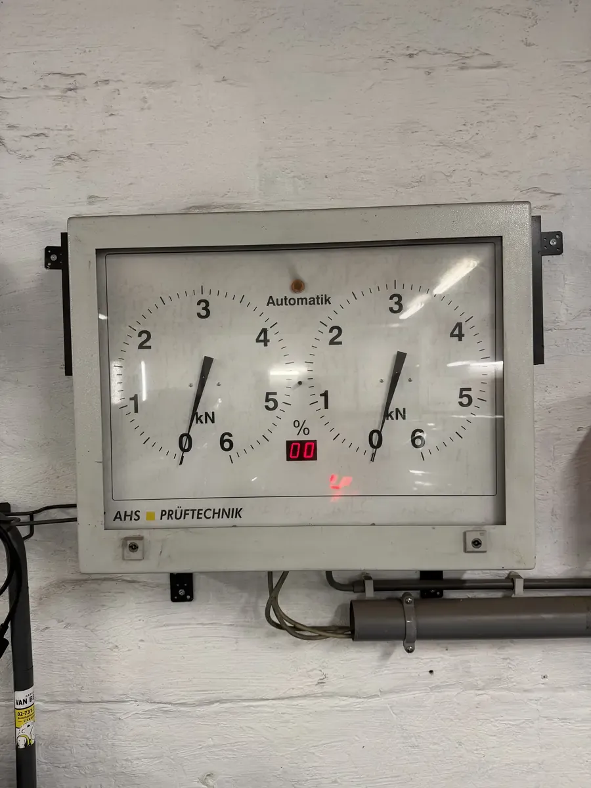
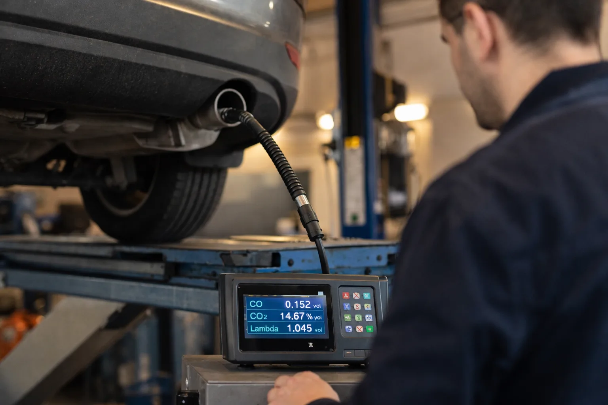
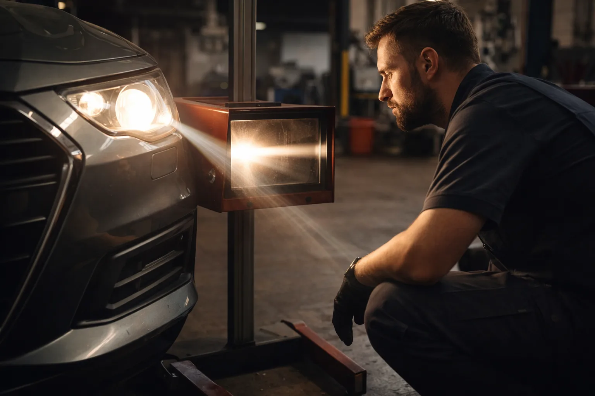

>Votre contrôle technique approche et vous avez peur de ne pas passer ? Chez DMT AUTOGROUP à Zaventem, on fait un pré-contrôle complet, on détecte tout ce qui pourrait poser problème, et on répare avant que vous alliez au centre de contrôle.
Environ 20% des voitures sont refusées au CT en Belgique. La plupart du temps, c'est pour des trucs qu'on aurait réparés en une heure.
On passe en revue tous les points que le centre de contrôle va vérifier. Freins, éclairage, pneus, émissions, suspension, direction, carrosserie — on vérifie tout. En Belgique, le premier contrôle technique a lieu 4 ans après la mise en circulation de votre véhicule. Après ça, c'est une fois par an.
Le problème numéro 1 au CT en Belgique ? L'éclairage. Un phare mal réglé et c'est la carte rouge. Ça prend 10 minutes à corriger chez nous.
Les autres causes fréquentes de refus : des freins usés, des pneus trop lisses, des émissions trop élevées et un jeu dans la direction. Un pré-contrôle chez nous vous évite cette situation. On détecte ces problèmes avant que vous alliez au centre.
Si quelque chose ne passe pas, on vous le dit clairement avec le coût de la réparation. Pas de surprises. Si vos freins sont usés, on les remplace. Si vos pneus sont lisses, on en monte des neufs. Tout en un seul passage chez nous sur la Mechelsesteenweg à Zaventem.

Le pré-contrôle technique, c'est comme un examen blanc avant le vrai examen. On simule exactement ce que le centre de contrôle va faire : test de freinage sur notre banc AHS Prüftechnik, vérification des émissions, contrôle de l'éclairage, état des pneus, jeu dans la direction et la suspension.
Le pré-contrôle prend environ 45 minutes. On inspecte votre véhicule de A à Z, point par point.
On a un client qui est allé 3 fois au contrôle technique avant de venir chez nous. Carte rouge, puis orange, puis orange encore. Il a perdu 3 demi-journées de boulot. Un pré-contrôle chez nous lui aurait coûté moins cher que les 3 contre-visites.
Si les émissions ne sont pas bonnes ou que le moteur a un souci, notre équipe de mécanique automobile intervient pour régler le problème. Vous repartez avec un rapport clair de ce qui est OK et de ce qui doit être réparé. Ce rapport indique chaque point vérifié avec un statut vert (OK), orange (à surveiller) ou rouge (à réparer).
C'est exactement le même système que le centre de contrôle technique en Belgique avec les cartes verte, orange et rouge. Comme ça, vous savez exactement où vous en êtes.


Si le pré-contrôle révèle des problèmes, on les répare tout de suite. Ampoules grillées, plaquettes de frein usées, fuite d'échappement, jeu de direction — ce sont les causes les plus fréquentes de refus au contrôle technique en Belgique.
On remplace les ampoules de phares, de clignotants et de feux stop. On règle l'alignement des phares quand ils éclairent trop haut ou trop bas. On change les plaquettes et disques de frein si l'efficacité n'est pas suffisante. On répare les fuites d'échappement qui font monter les émissions.
Un élément de carrosserie endommagé ou rouillé peut aussi entraîner un refus — on s'en occupe aussi.
Chez DMT AUTOGROUP, on fait la mise en conformité le jour même dans la plupart des cas. Pas besoin de revenir un autre jour. Pas besoin de faire des allers-retours entre le garage et le centre de contrôle technique. On règle tout ici, et vous allez au CT serein.
Les automobilistes de Zaventem, Diegem, Kraainem et Sterrebeek viennent chez nous pour ce service rapide. Combiné avec une vidange, c'est l'entretien complet qui remet votre voiture à niveau avant le contrôle technique.
Voici la liste complète des points qu'on vérifie lors de notre pré-contrôle technique. C'est la même liste que celle du centre de contrôle technique en Belgique.
Passez chez nous avec votre rapport de contrôle. On regarde les points refusés et on répare — souvent le jour même. Souvent c'est les freins, les pneus ou l'éclairage. Comme ça, vous retournez au centre pour la contre-visite sans perdre de temps. La prochaine fois, faites un pré-contrôle chez nous avant d'y aller, ça vous évitera la mauvaise surprise.
Carte verte, votre voiture est en ordre, rien à signaler. Carte orange, il y a des remarques mais vous passez quand même — il faudra corriger ça pour la prochaine fois. Carte rouge, votre voiture est refusée et vous devez repasser après réparation. C'est pour éviter la carte rouge qu'on fait le pré-contrôle.
Le pré-contrôle en lui-même est proposé à un prix accessible. Le coût total dépend des réparations éventuelles. On vous donne un devis clair avant de toucher à quoi que ce soit — pas de surprises sur la facture. Appelez le 0484 11 58 13 pour en savoir plus.
Oui, on accepte les clients sans rendez-vous. Mais si vous voulez être sûr de ne pas attendre, appelez-nous au 0484 11 58 13 et on vous trouve un créneau rapidement. On est sur la Mechelsesteenweg à Zaventem.
Oui, c'est tout l'intérêt de passer chez nous. Si le pré-contrôle révèle un souci — freins usés, ampoule grillée, fuite d'échappement — on répare directement dans notre garage, de la mécanique à la carrosserie. Vous n'avez pas besoin de courir entre le centre de contrôle et un autre garage.
Lundi — Vendredi · 08:30 — 18:00
Mechelsesteenweg 270, 1933 Zaventem